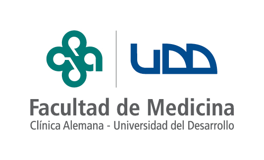
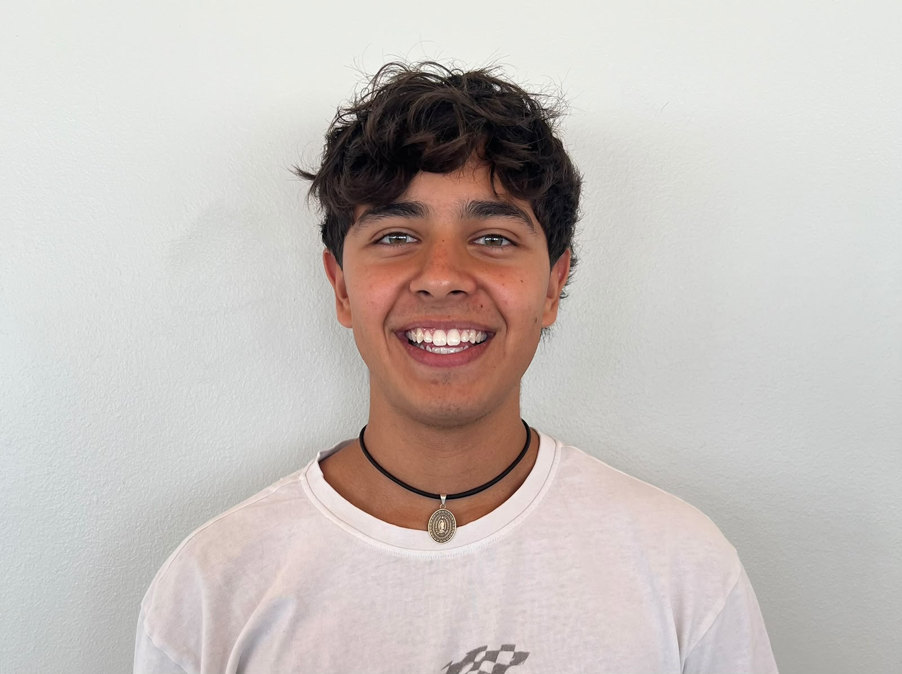

Un producto de LactoScan pensado para ayudarte a comer con más seguridad, confianza y tranquilidad.
Descubre cómo funcionaTecnología enzimática portátil. Resultados en menos de 3 minutos.
Nuestra aplicación inteligente identifica visualmente las zonas de riesgo en tu plato (salsas, quesos, cremas) y te indica exactamente dónde tomar la muestra.
Toma una pequeña porción del alimento sospechoso, deposítala en nuestro cartucho reactivo desechable e insértalo en el lector portátil de bolsillo.
El lector analiza la enzima y te entrega un resultado inconfundible (verde, amarillo o rojo). Sabrás si es seguro comer antes de arriesgarte.
Basado en el estándar de la industria MedTech: dispositivo accesible + consumible recurrente.
Lector portátil LactoScan de alta precisión.
Pack mensual de 20 cartuchos inteligentes.
Conoce al equipo fundador detrás de LactoScan.

CEO & Hardware

CTO & IA
CMO & Regulatory Strategy
Comenzamos con lactosa. Expandimos hacia múltiples alérgenos.
Impacto Clínico: 90% reducción de eventos adversos Gastrointestinal (GI).
Impacto Social: Devolver la confianza al comer fuera.
Desarrollo de detección para intolerantes a la lactosa. El punto de partida de SafeBite.
Expansión para detección de gluten (celiaquía). Alcance a población celíaca.
Incorporación de alérgenos comunes como el maní y otros frutos secos.
Creación de una plataforma integral para múltiples alérgenos y seguridad alimentaria.
Comer no debería ser una apuesta. Únete a la revolución alimentaria.